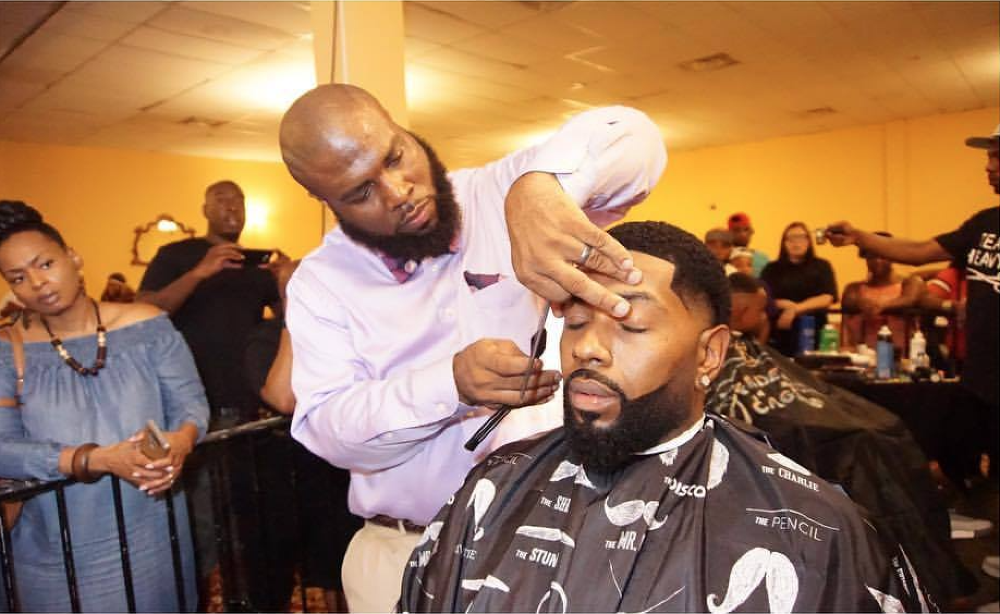
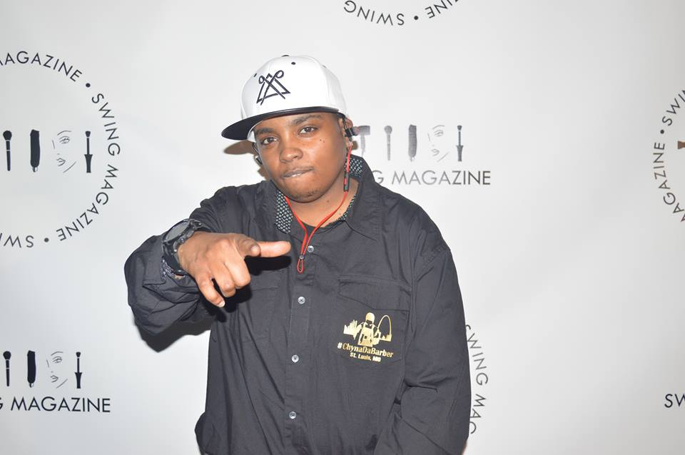
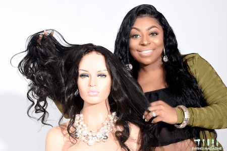
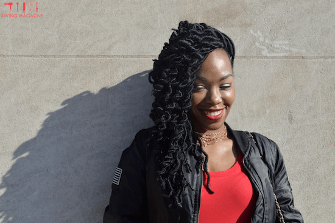
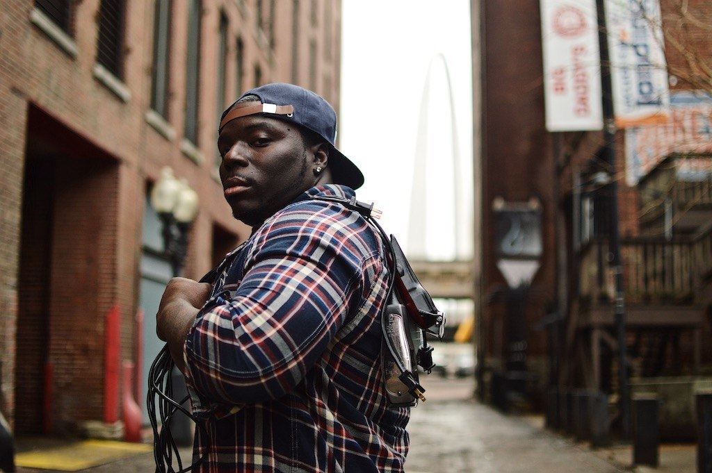
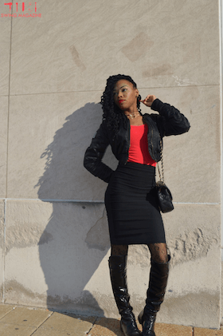
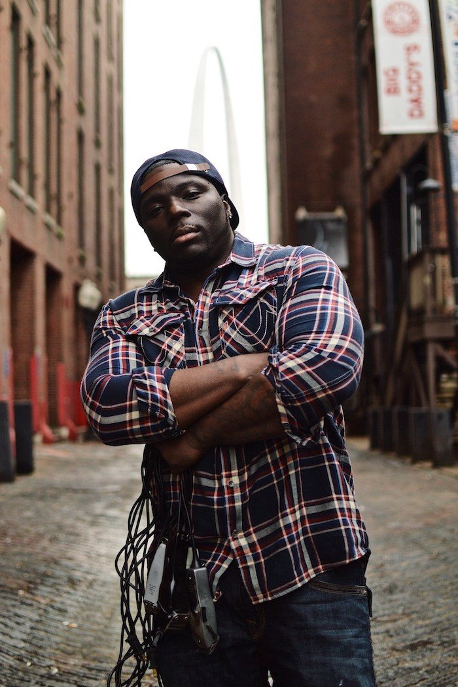

Stephanie has been a hair stylist for three and a half years. She started at Original House of Styles and has been styling at @sleeksalon since 2014. What makes her passionate about what she does is a client’s reaction, the faces women make when they feel beautiful, interacting with people, and learning different styles and techniques. She absolutely loves meeting new people and clients!

Danesha Rose has been styling hair in Saint Louis since she was 14, and graduated from Paul Mitchell cosmetology school on December 28th, 2016. She’s a stylist at the @headgamebeautyandbarber , and has been there for one year.
What she enjoys most is seeing her clients’ before and after transformations, as well as helping them with their hair challenges.
So young, So fleek. So FETCH.
Ashley Muhammad has been in her profession for two years now. Having her clients feel beautiful and confident is one of the main reasons why she enjoys what she does. She enjoys her clients leaving with nothing but confidence in themselves, and respects the relationships that she builds inside and outside of the chair.
Ashjia Wraggs-Pettis Is the owner of Wraggs to Riches Salon, a full-service Salon creating a Luxury Salon experience. Ashjia has only been serving as a licensed cosmetologist for seven years, and through her talents and perseverance, she has also been the make up artist for the stars. These stars include Jennifer Lewis and reality TV star "Mama Dee."
Owner of Lavish and Luxury Hair Company & Celebrity Stylist

Martez has been a barber for 10 years, and the quality he delivers reflects that. It makes him feel good after seeing the reaction of his clients when they’re oversastisfied with his services! Seeing their increased confidence in his abilities has made his passion for barbering and grooming blossom. The recognition and satisfaction he gets from his clients is what makes him want to go even harder.
Businessman Barber & Patois Partner
Bryan has had clippers in his hands since he was 14 years old, and has been cutting professionally for 10 years. The satisfaction of the clients’ faces after he cuts their hair, not to mention the recognition the clients get once they leave the shop makes Bryan’s work worthwhile. Bryan states when a client comes back and tells him he’s had all luck with the ladies, or “my girl loved my cut!”, is just as rewarding.
Stephanie has been a hair stylist for three and a half years. She started at Original House of Styles and has been styling at @sleeksalon since 2014. What makes her passionate about what she does is a client’s reaction, the faces women make when they feel beautiful, interacting with people, and learning different styles and techniques. She absolutely loves meeting new people and clients!

Her first mentor was Ashley Woods, the owner of @cocktailzabeautybar in the Delmar Loop St. Louis. Chi Chi McDonald groomed her and encouraged her in business and choosing the best beauty school. Stephanie first fostered a relationship with these two women as their client.
Over time, she built on her craft and works to make every client satisfied and beautiful.
Danesha Rose has been styling hair in Saint Louis since she was 14, and graduated from Paul Mitchell cosmetology school on December 28th, 2016. She’s a stylist at the @headgamebeautyandbarber , and has been there for one year.
What she enjoys most is seeing her clients’ before/after transformations,
as well as helping them with their hair challenges.
Rose considers her communication to be the best asset at her success.
Effective communication with clients combined with her passion to showcase her work in the best
light work together to make her final products amazing.
In the future, her plan is to own a diverse salon and establish herself as an industry educator.
Rose considers her big sister to be her biggest influence even though she isn’t in the field. “She pushed me to this point because she always expressed how much greatness I had on the inside.”
Ashley Muhammad has been in her profession for two years now. Having her clients feel beautiful and confident is one of the main reasons why she enjoys what she does. She enjoys her clients leaving with nothing but confidence in themselves, and respects the relationships that she builds inside and outside of the chair.
The pressures to compromise her craft where real. She had to deal with clients not being happy with the prices of her services. By staying true to who she knows she is, and knowing her worth as a stylist kept her going strong. If her prices didn’t suite others, then that clientele wasn’t what she was interested in.
Ashjia Wraggs-Pettis is the owner of Wraggs to Riches Salon, a full-service Salon creating a Luxury Salon experience. Ashjia has only been serving as a licensed cosmetologist for seven years, and through her talents and perseverance, she has also been the make up artist for the stars. These stars include Jennifer Lewis and reality TV star "Mama Dee."
Passionate about her profession, she aspires to teach and help other stylist grow in their careers. She has put in the work, and both success of her businesses can attest to her reputation.
Owner of Lavish and Luxury Hair Company & Celebrity Stylist
Martez has been a barber for 10 years, and the quality he delivers reflects that. It makes him feel good after seeing the reaction of his clients when they’re oversastisfied with his services! Seeing their increased confidence in his abilities has made his passion for barbering and grooming blossom. The recognition and satisfaction he gets from his clients is what makes him want to go even harder.
What makes him good at what he does?
He’s always trying to take his abilities to the next level.
He comes from a family of Haitian entrepreneurs, so his influences come from a deep-rooted
culture of strong people; his grandfather, his father, and mother.
A major influence in his success is his barber brother,
Haven Hobbs, who has taught him a lot about industry business.
In regard to being pressured to compromise his craft, he ‘s humble enough to put the best of him and everything
he does, his work and how he carries himself.
Bryan has had clippers in his hands since he was 14 years old, and has been cutting professionally for 10 years. The satisfaction of the clients’ faces after he cuts their hair, not to mention the recognition the clients get once they leave the shop makes Bryan’s work worthwhile. Bryan states when a client comes back and tells him he’s had all luck with the ladies, or “my girl loved my cut!”, is just as rewarding.
What makes Bryan special is his dedication to taking the time necessary to execute the final project. Blood, Sweat, and Tears, and being confident is what makes his work so great. Bryan believes there is no hairstyle he cannot cut.
Over the next five years, Bryan wants to grow a larger following and gain even more experience. He would love to have a fully functioning shop filled with talented barbers ranging from experts to beginners at all different levels. He is constantly seeking new learning opportunities that will make him an even better barber.
Bryan’s mentors include the owner of @firstclassbarbershop , Alphie Hill, his fellow barber who has always had his back, and last but not least, Miss Pat, who runs ABC Barber College.